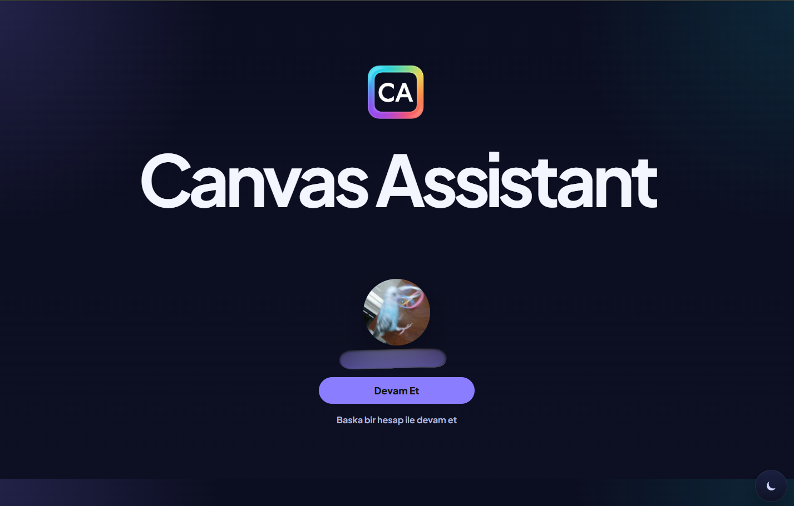

Shop connection
Built around Etsy OAuth flows for connecting one or multiple shops.
Canvas Assistant is a desktop tool designed to help Etsy sellers connect their shops, prepare product drafts, manage mockup workflows, and move faster across day-to-day store operations.

Features
Built around Etsy OAuth flows for connecting one or multiple shops.
Helps sellers move faster when preparing product visuals and mockup-based assets.
Product drafts, settings, and operational data can be saved locally for faster reuse.
User data can be manually backed up to Google Drive when the user chooses to sync.
Screens
Real product screens are woven directly into the page, with a lead view at the top and supporting workflow views below.
Privacy
Canvas Assistant uses data from connected services only to support the user experience inside the application. The product is designed around API-based integrations and does not target scraping behavior. User settings, drafts, and related workflow data may be stored locally and can optionally be backed up to Google Drive by the user.
For support and access requests: support.canvasassistant@gmail.com
The term "Etsy" is a trademark of Etsy, Inc. This application uses the Etsy API but is not endorsed or certified by Etsy, Inc.